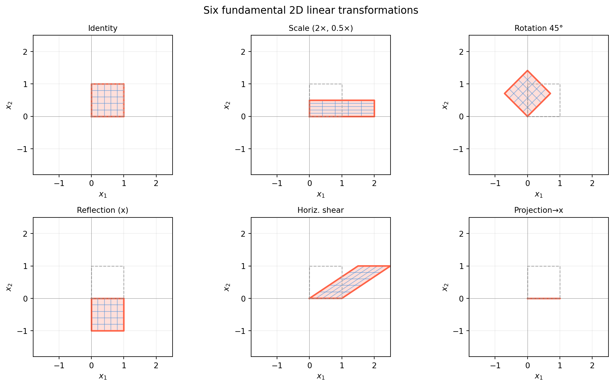
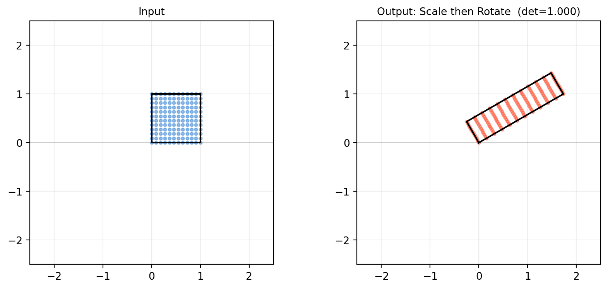
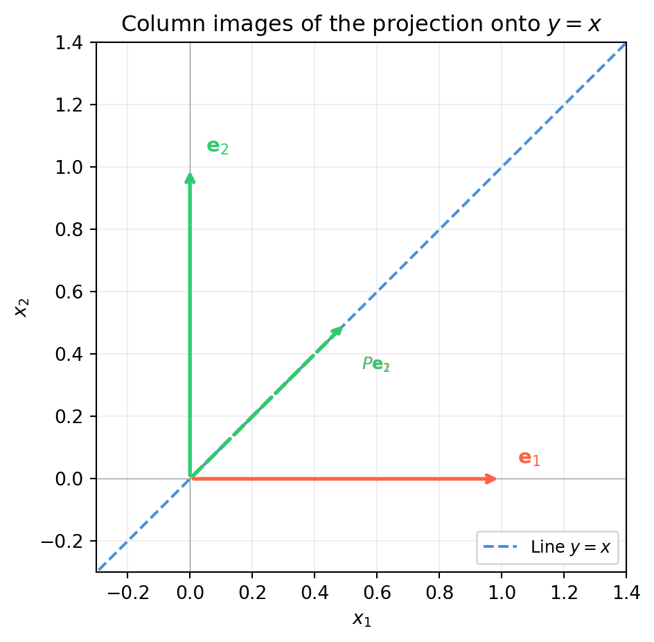
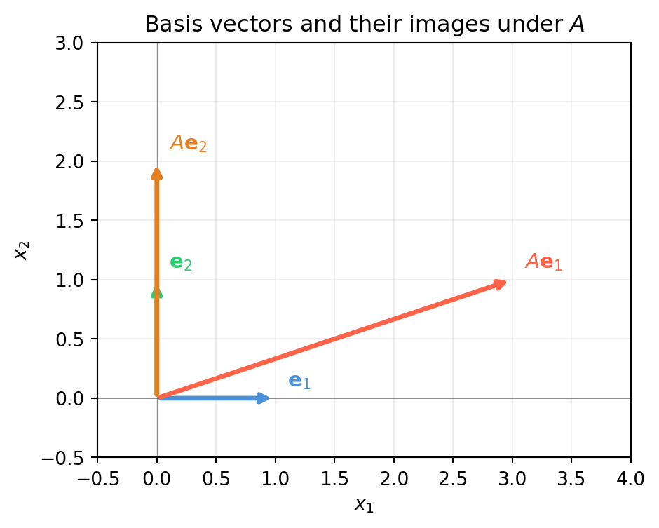
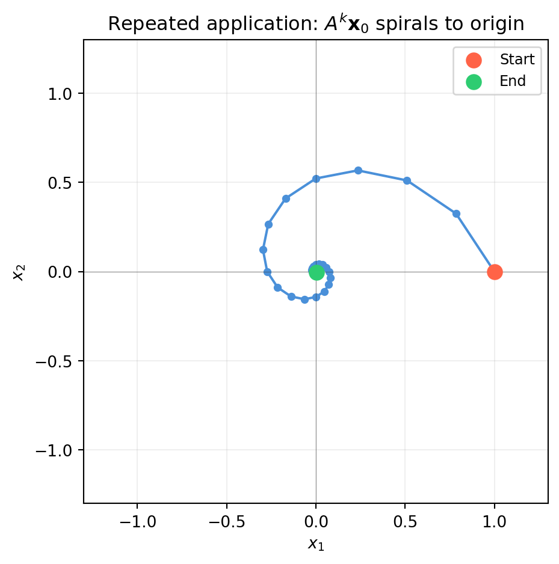
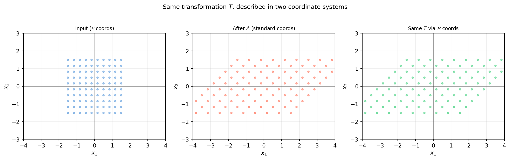
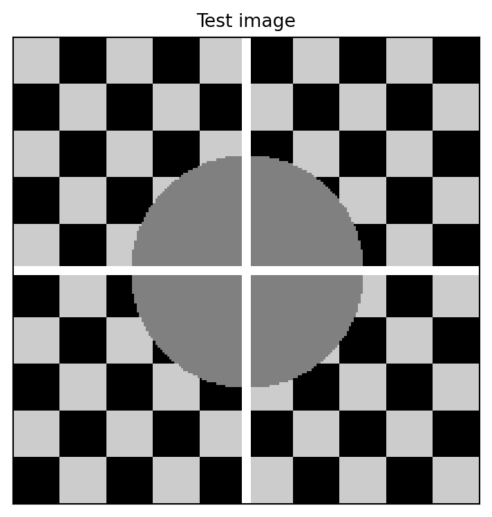
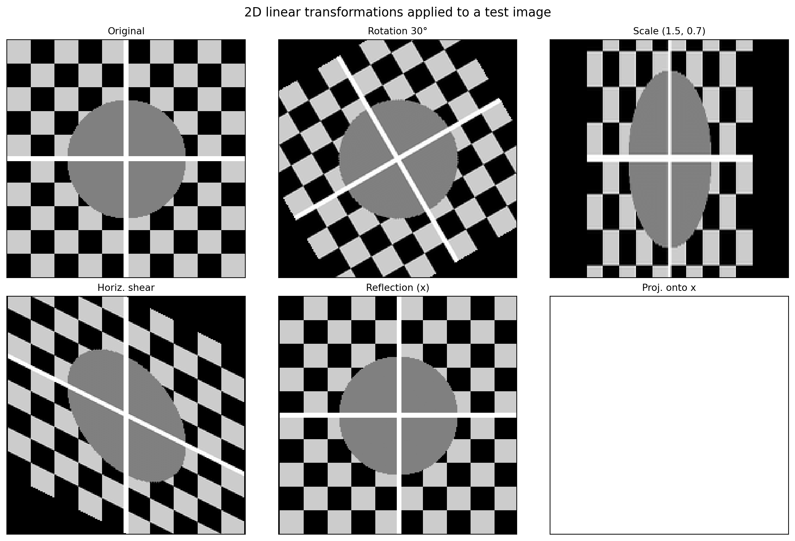

A linear transformation is a function \(T : \mathbb{R}^n \to \mathbb{R}^m\) that respects two operations — scaling and addition:
\[T(c\,\mathbf{u} + \mathbf{v}) = c\,T(\mathbf{u}) + T(\mathbf{v})
\quad \text{for all } \mathbf{u}, \mathbf{v} \in \mathbb{R}^n,\ c \in \mathbb{R}\]
This single rule (often stated as two separate axioms) encodes everything a linear map can do. And it completely excludes things a linear map cannot do — translate, curve, or rescale differently in different places.
6.1.1 Why This Definition Matters
The linearity condition is not a technicality — it is the reason matrices exist.
Claim: Every linear map \(T : \mathbb{R}^n \to \mathbb{R}^m\) is completely determined by where it sends the \(n\) standard basis vectors \(\mathbf{e}_1, \ldots, \mathbf{e}_n\).
Proof sketch: Any vector \(\mathbf{x} = x_1\mathbf{e}_1 + \cdots + x_n\mathbf{e}_n\), so by linearity:
Every linear map sends the origin to the origin. If a function moves the origin, it cannot be linear — that is the key distinction between linear and affine maps (Chapter 7).
The second row is an affine map — the topic of Chapter 7.
6.1.5 Linearity in Machine Learning
Linear transformations appear everywhere in ML:
Fully connected layers: \(\mathbf{y} = W\mathbf{x}\) is a linear map; adding the bias \(\mathbf{b}\) makes it affine.
PCA: the projection onto principal components is linear (Chapter 20).
Kalman filter: the observation model \(\mathbf{z} = H\mathbf{x}\) is linear (Chapter 23).
The nonlinearity in neural networks comes entirely from the activation functions, not from the weight matrices themselves. Understanding what weight matrices can and cannot do is the foundation for understanding deep networks.
6.2 A Visual Zoo of 2D Transformations
Every \(2 \times 2\) matrix performs one of a handful of recognisable operations on the plane. Knowing this zoo by sight lets you look at a matrix and immediately know its geometric effect — an essential skill for robotics, computer vision, and understanding why algorithms behave the way they do.
We will watch each transformation deform the same object: a unit square and a set of equally-spaced grid lines.
import numpy as npimport matplotlib.pyplot as pltimport matplotlib.patches as mpatchestheta = np.pi /4# 45 degreestransforms = {'Identity': np.eye(2),'Scale (2×, 0.5×)': np.array([[2., 0.],[0., 0.5]]),'Rotation 45°': np.array([[np.cos(theta), -np.sin(theta)], [np.sin(theta), np.cos(theta)]]),'Reflection (x)': np.array([[1., 0.],[0., -1.]]),'Horiz. shear': np.array([[1., 1.5],[0., 1.]]),'Projection→x': np.array([[1., 0.],[0., 0.]]),}# Unit square vertices (closed polygon)sq = np.array([[0,0],[1,0],[1,1],[0,1],[0,0]], dtype=float) # shape (5, 2)# Grid lines in input spacelines_h = [np.array([[0, y],[1, y]]) for y in np.linspace(0, 1, 6)]lines_v = [np.array([[x, 0],[x, 1]]) for x in np.linspace(0, 1, 6)]grid_lines = lines_h + lines_vfig, axes = plt.subplots(2, 3, figsize=(12, 7))axes = axes.flatten()for ax, (name, A) inzip(axes, transforms.items()):# Transform gridfor ln in grid_lines: lt = (A @ ln.T).T ax.plot(lt[:, 0], lt[:, 1], color='#4a90d9', lw=0.8, alpha=0.6)# Transform square outline sq_t = (A @ sq.T).T ax.fill(sq_t[:-1, 0], sq_t[:-1, 1], alpha=0.20, color='tomato') ax.plot(sq_t[:, 0], sq_t[:, 1], color='tomato', lw=2)# Original square (faint) ax.plot(sq[:, 0], sq[:, 1], color='#aaaaaa', lw=1, ls='--') ax.set_xlim(-1.8, 2.5); ax.set_ylim(-1.8, 2.5) ax.set_aspect('equal') ax.axhline(0, color='#333333', lw=0.4, alpha=0.5) ax.axvline(0, color='#333333', lw=0.4, alpha=0.5) ax.grid(True, alpha=0.2) ax.set_title(name, fontsize=10) ax.set_xlabel('$x_1$'); ax.set_ylabel('$x_2$')fig.suptitle('Six fundamental 2D linear transformations', fontsize=13)fig.tight_layout()plt.show()

6.2.3 What to Notice
Scaling stretches independently along each axis. If \(s_x = s_y\) the square becomes a bigger or smaller square (uniform scale); if \(s_x \neq s_y\) it becomes a rectangle.
Rotation preserves distances and angles — it is the prototype of an isometry. The determinant is \(\cos^2\theta + \sin^2\theta = 1\).
Reflection also preserves distances, but it reverses orientation — the counter-clockwise order of vertices becomes clockwise. The determinant is \(-1\).
Shear keeps one axis fixed while sliding the other. A horizontal shear of \(k\) maps \(\mathbf{e}_2 \mapsto [k, 1]^T\). The square tilts into a parallelogram but area is preserved (\(\det = 1\)).
Projectiondestroys information: the whole plane collapses onto a line. The determinant is 0, the transformation is not invertible.
6.2.4 Determinant = Signed Area Scale Factor
import numpy as nptransforms = {'Identity': np.eye(2),'Scale (2, 0.5)': np.array([[2., 0.],[0., 0.5]]),'Rotation 45°': np.array([[np.cos(np.pi/4), -np.sin(np.pi/4)], [np.sin(np.pi/4), np.cos(np.pi/4)]]),'Reflection': np.array([[1., 0.],[0., -1.]]),'Horiz. shear (1.5)': np.array([[1., 1.5],[0., 1.]]),'Projection→x': np.array([[1., 0.],[0., 0.]]),}print(f"{'Transform':<25} det")print("-"*35)for name, A in transforms.items(): d = np.linalg.det(A)print(f"{name:<25}{d:+.4f}")
The unit square has area 1. After transformation, the area becomes \(|\det A|\). When \(\det A < 0\), orientation is reversed (left-hand becomes right-hand). When \(\det A = 0\), the square collapses to a lower-dimensional object — volume is destroyed and the map is not invertible.
6.2.5 Interactive: Build Your Own Transformation
import numpy as npimport matplotlib.pyplot as pltdef show_transform(A, title='Custom'):"""Show what matrix A does to the unit square and a smiley grid.""" sq = np.array([[0,0],[1,0],[1,1],[0,1],[0,0]], dtype=float)# A denser grid to show distortion s = np.linspace(0, 1, 12) grid_pts = np.array([[u, v] for u in s for v in s]) # shape (144, 2) mapped = (A @ grid_pts.T).T # shape (144, 2) sq_t = (A @ sq.T).T fig, axes = plt.subplots(1, 2, figsize=(9, 4)) axes[0].scatter(grid_pts[:,0], grid_pts[:,1], s=8, color='#4a90d9', alpha=0.6) axes[0].plot(sq[:,0], sq[:,1], 'k-', lw=1.5) axes[0].set_title('Input', fontsize=10) axes[1].scatter(mapped[:,0], mapped[:,1], s=8, color='tomato', alpha=0.6) axes[1].plot(sq_t[:,0], sq_t[:,1], 'k-', lw=1.5) axes[1].set_title(f'Output: {title} (det={np.linalg.det(A):.3f})', fontsize=10)for ax in axes: ax.set_aspect('equal') ax.axhline(0, color='#333333', lw=0.4, alpha=0.5) ax.axvline(0, color='#333333', lw=0.4, alpha=0.5) ax.grid(True, alpha=0.2) ax.set_xlim(-2.5, 2.5); ax.set_ylim(-2.5, 2.5) fig.tight_layout() plt.show()# Try a combined scale + rotationtheta = np.pi /6R = np.array([[np.cos(theta), -np.sin(theta)], [np.sin(theta), np.cos(theta)]])S = np.array([[2., 0.], [0., 0.5]])show_transform(R @ S, title='Scale then Rotate')

6.3 Reading the Standard Matrix from Column Images
Section 6.1 showed that every linear map is determined by where it sends the basis vectors. This section turns that observation into a recipe for writing down any linear map as a matrix — without having to solve any system of equations.
The recipe: to find the matrix of \(T : \mathbb{R}^n \to \mathbb{R}^m\), apply \(T\) to each standard basis vector \(\mathbf{e}_j\) and use the result as the \(j\)-th column of the matrix:
6.3.3 Example 2: Projection onto the Line \(y = x\)
The projection of \(\mathbf{v}\) onto the line \(y = x\) has direction \(\hat{\mathbf{u}} = \frac{1}{\sqrt{2}}[1,1]^T\). Using the formula \(P = \hat{\mathbf{u}}\hat{\mathbf{u}}^T\):
P =
[[0.5 0.5]
[0.5 0.5]]
T(e1) = P @ e1 = [0.5 0.5] (column 1 of P)
T(e2) = P @ e2 = [0.5 0.5] (column 2 of P)

6.3.4 Example 3: Deriving an Unknown Map
Suppose you observe that a linear map \(T : \mathbb{R}^2 \to \mathbb{R}^3\) satisfies \(T([1,0]^T) = [2, -1, 0]^T\) and \(T([0,1]^T) = [1, 3, -2]^T\). Write down its matrix immediately:
import numpy as np# Observed basis imagesT_e1 = np.array([2., -1., 0.]) # shape (3,)T_e2 = np.array([1., 3., -2.]) # shape (3,)# Standard matrix: stack images as columnsA = np.column_stack([T_e1, T_e2]) # shape (3, 2)print("Standard matrix A =");print(A)# Verify: what does T do to an arbitrary vector x = [3, -1]?x = np.array([3., -1.]) # shape (2,)print(f"\nT({x}) = A @ x = {A @ x}")print(f"Manual: 3*T(e1) + (-1)*T(e2) = {3*T_e1 + (-1)*T_e2}")
Standard matrix A =
[[ 2. 1.]
[-1. 3.]
[ 0. -2.]]
T([ 3. -1.]) = A @ x = [ 5. -6. 2.]
Manual: 3*T(e1) + (-1)*T(e2) = [ 5. -6. 2.]
6.3.5 The Recipe in Reverse: Reading a Matrix
Given a matrix \(A\), you can immediately state its action on each basis vector. For example:
Column 1 = \([3,1]^T\): the x-axis gets mapped to the vector \((3,1)\).
Column 2 = \([0,2]^T\): the y-axis gets mapped straight up, scaled by 2.
import numpy as npimport matplotlib.pyplot as pltA = np.array([[3., 0.], [1., 2.]]) # shape (2, 2)e1 = np.array([1., 0.])e2 = np.array([0., 1.])fig, ax = plt.subplots(figsize=(5, 5))vecs = {'$\\mathbf{e}_1$': (e1, '#4a90d9'),'$\\mathbf{e}_2$': (e2, '#2ecc71'),'$A\\mathbf{e}_1$': (A @ e1, 'tomato'),'$A\\mathbf{e}_2$': (A @ e2, '#e67e22')}for label, (v, col) in vecs.items(): ax.annotate('', xy=v, xytext=[0,0], arrowprops=dict(arrowstyle='->', color=col, lw=2.5)) ax.text(v[0]+0.1, v[1]+0.1, label, color=col, fontsize=11)ax.set_xlim(-0.5, 4); ax.set_ylim(-0.5, 3)ax.set_aspect('equal')ax.axhline(0, color='#333333', lw=0.4, alpha=0.5)ax.axvline(0, color='#333333', lw=0.4, alpha=0.5)ax.grid(True, alpha=0.2)ax.set_xlabel('$x_1$'); ax.set_ylabel('$x_2$')ax.set_title('Basis vectors and their images under $A$')plt.tight_layout()plt.show()

6.3.6 Summary
Step
What you do
1
Apply \(T\) to each \(\mathbf{e}_j\) to get \(T(\mathbf{e}_j)\)
2
Use \(T(\mathbf{e}_j)\) as the \(j\)-th column of \([T]\)
3
Check: \([T]\mathbf{x}\) should equal the direct computation \(T(\mathbf{x})\)
This is more than a trick — it is the definition of the standard matrix. Every \(m \times n\) matrix encodes a linear map from \(\mathbb{R}^n\) to \(\mathbb{R}^m\), and every such linear map has exactly one such matrix.
6.4 Kernel, Image, and the Dimension Theorem
Two subspaces are attached to every linear map \(T : \mathbb{R}^n \to \mathbb{R}^m\):
Kernel (null space): inputs that \(T\) maps to zero — \(\ker T = \{\mathbf{x} : T(\mathbf{x}) = \mathbf{0}\}\).
Image (column space): all possible outputs — \(\operatorname{im} T = \{T(\mathbf{x}) : \mathbf{x} \in \mathbb{R}^n\}\).
These two subspaces are linked by a beautifully simple equation.
6.4.1 The Rank-Nullity Theorem
\[\dim(\ker T) + \dim(\operatorname{im} T) = n\]
In plain language: the dimension of the input space equals the number of dimensions “killed” (kernel) plus the number “produced” (image). You can’t create more output dimensions than you have input dimensions, and any dimension lost to the kernel is exactly one dimension missing from the image.
Any vector in the kernel can be added “for free” without changing the output. This is why \(A\mathbf{x} = \mathbf{b}\) has infinitely many solutions when the kernel is non-trivial — you have free parameters.
import numpy as npimport matplotlib.pyplot as plt# 2x3 matrix: maps R^3 -> R^2, rank 2, nullity 1A = np.array([[1., 0., 1.], [0., 1., 1.]]) # shape (2, 3)b = np.array([2., 3.]) # shape (2,)xp, _, _, _ = np.linalg.lstsq(A, b, rcond=None)# Null space vector (SVD)_, s, Vt = np.linalg.svd(A)null_vec = Vt[-1] # shape (3,)print(f"Particular solution: xp = {xp.round(4)}")print(f"Null space vector: n = {null_vec.round(4)}")print(f"A @ xp = {A @ xp} (= b = {b})")print(f"A @ null_vec = {(A @ null_vec).round(10)} (= 0)")# Show family of solutionst_vals = np.linspace(-3, 3, 7)print(f"\nFamily x = xp + t*null_vec, A @ x:")for t in t_vals: x = xp + t * null_vecprint(f" t={t:+.1f} → x={x.round(3)}, A@x={np.round(A@x,3)}")
Particular solution: xp = [0.3333 1.3333 1.6667]
Null space vector: n = [-0.5774 -0.5774 0.5774]
A @ xp = [2. 3.] (= b = [2. 3.])
A @ null_vec = [0. 0.] (= 0)
Family x = xp + t*null_vec, A @ x:
t=-3.0 → x=[ 2.065 3.065 -0.065], A@x=[2. 3.]
t=-2.0 → x=[1.488 2.488 0.512], A@x=[2. 3.]
t=-1.0 → x=[0.911 1.911 1.089], A@x=[2. 3.]
t=+0.0 → x=[0.333 1.333 1.667], A@x=[2. 3.]
t=+1.0 → x=[-0.244 0.756 2.244], A@x=[2. 3.]
t=+2.0 → x=[-0.821 0.179 2.821], A@x=[2. 3.]
t=+3.0 → x=[-1.399 -0.399 3.399], A@x=[2. 3.]
6.4.4 The Image: What Can Be Reached?
The image is the column space of \(A\). A vector \(\mathbf{b}\) can be reached by \(T\)if and only if\(\mathbf{b} \in \operatorname{im} T\).
import numpy as npA = np.array([[1., 0., 1.], [0., 1., 1.]]) # shape (2, 3), rank 2# The image is all of R^2 since rank = m = 2# Every b in R^2 is reachableb_test = np.array([5., -2.]) # shape (2,)x, _, _, _ = np.linalg.lstsq(A, b_test, rcond=None)residual = np.linalg.norm(A @ x - b_test)print(f"b = {b_test}")print(f"Residual after lstsq: {residual:.2e} → b in im(A)? {'YES'if residual<1e-10else'NO'}")# Now try a rank-deficient matrix: image is a proper subspace of R^3B = np.array([[1., 2.], [2., 4.], [3., 6.]]) # shape (3, 2), rank 1b_in = np.array([2., 4., 6.]) # = 2 * col1, in im(B)b_out = np.array([1., 1., 1.]) # not in im(B)for label, bv in [("b_in ", b_in), ("b_out", b_out)]: xv, _, _, _ = np.linalg.lstsq(B, bv, rcond=None) res = np.linalg.norm(B @ xv - bv)print(f"\n{label} = {bv}: residual = {res:.2e} → in im(B)? {'YES'if res<1e-10else'NO'}")
b = [ 5. -2.]
Residual after lstsq: 4.44e-16 → b in im(A)? YES
b_in = [2. 4. 6.]: residual = 4.97e-16 → in im(B)? YES
b_out = [1. 1. 1.]: residual = 6.55e-01 → in im(B)? NO
6.4.5 One-to-One, Onto, and Invertibility
Condition
Algebraic
Geometric
One-to-one (injective)
\(\ker T = \{\mathbf{0}\}\)
No two inputs share an output
Onto (surjective)
\(\operatorname{im} T = \mathbb{R}^m\)
Every output is reachable
Invertible (bijective)
Both
Unique input for every output
For a square matrix (\(n = m\)): - \(\ker T = \{\mathbf{0}\}\)\(\iff\)\(\operatorname{im} T = \mathbb{R}^n\)\(\iff\)\(\det A \neq 0\)\(\iff\)\(A\) is invertible.
These are all the same thing for square matrices.
import numpy as npcases = {'Full rank (invertible)': np.array([[2., 1.],[1., 3.]]),'Rank 1 (singular)': np.array([[1., 2.],[2., 4.]]),'Tall (3x2, injective)': np.array([[1.,0.],[0.,1.],[1.,1.]]),'Wide (2x3, onto)': np.array([[1.,0.,1.],[0.,1.,1.]]),}print(f"{'Matrix':<30} shape rank nullity det")print("-"*60)for name, A in cases.items(): r = np.linalg.matrix_rank(A) nul = A.shape[1] - r det = np.linalg.det(A) if A.shape[0]==A.shape[1] elsefloat('nan')print(f"{name:<30}{str(A.shape):<8}{r}{nul}{det:+.2f}"ifnot np.isnan(det)elsef"{name:<30}{str(A.shape):<8}{r}{nul} n/a")
Machine learning: if a weight matrix has a non-trivial null space, different weight vectors produce identical predictions — the model is over-parameterised.
Computer vision: the null space of the camera matrix reveals the camera centre (the 3D point that maps to every image point — Section 10.3).
Robotics: if a robot’s Jacobian has a non-trivial null space, there exist joint-velocity combinations that produce zero end-effector velocity — redundant degrees of freedom.
6.5 Composition = Matrix Multiplication
Applying two linear maps in sequence is another linear map. The matrix of the composed map is the product of the individual matrices. This is not just a notational convenience — it is why matrix multiplication is defined the way it is.
Theorem: If \(S : \mathbb{R}^n \to \mathbb{R}^m\) has matrix \(A\) and \(T : \mathbb{R}^m \to \mathbb{R}^p\) has matrix \(B\), then \(T \circ S : \mathbb{R}^n \to \mathbb{R}^p\) has matrix \(BA\).
Note the order: the rightmost matrix is applied first.
6.5.1 Why Multiplication Is Defined This Way
Apply \(S\) then \(T\) to a vector \(\mathbf{x}\):
The determinant of a product equals the product of determinants: \(\det(BA) = \det B \cdot \det A\).
6.5.4 Powers of a Transformation
Applying \(T\) to itself \(k\) times gives \(T^k\), represented by \(A^k\):
import numpy as npimport matplotlib.pyplot as plt# A "spiral" transformation: slight rotation + slight shrinktheta = np.pi /8A =0.85* np.array([[np.cos(theta), -np.sin(theta)], # shape (2, 2) [np.sin(theta), np.cos(theta)]])# Track a point under repeated applicationx0 = np.array([1., 0.]) # shape (2,)trajectory = [x0.copy()]x = x0.copy()for _ inrange(30): x = A @ x trajectory.append(x.copy())traj = np.array(trajectory) # shape (31, 2)fig, ax = plt.subplots(figsize=(5, 5))ax.plot(traj[:, 0], traj[:, 1], 'o-', color='#4a90d9', ms=4, lw=1.5)ax.scatter(traj[0, 0], traj[0, 1], color='tomato', s=80, zorder=5, label='Start')ax.scatter(traj[-1, 0], traj[-1, 1], color='#2ecc71', s=80, zorder=5, label='End')ax.set_xlim(-1.3, 1.3); ax.set_ylim(-1.3, 1.3)ax.set_aspect('equal')ax.axhline(0, color='#333333', lw=0.4, alpha=0.5)ax.axvline(0, color='#333333', lw=0.4, alpha=0.5)ax.grid(True, alpha=0.2)ax.set_xlabel('$x_1$'); ax.set_ylabel('$x_2$')ax.set_title('Repeated application: $A^k\\mathbf{x}_0$ spirals to origin')ax.legend(fontsize=9)plt.tight_layout()plt.show()

The spiral converges to the origin because both eigenvalues of \(A\) have magnitude \(0.85 < 1\). Eigenvalues govern the long-run behaviour of iterated maps — the subject of Chapter 13.
6.5.5 Invertibility and the Inverse Map
If \(A\) is invertible, the inverse transformation \(T^{-1}\) has matrix \(A^{-1}\). Composing them gives the identity:
\[A^{-1}A = AA^{-1} = I\]
For composed maps: \((BA)^{-1} = A^{-1}B^{-1}\) — reverse the order.
6.6 Change of Basis: \([T]_{\mathcal{B}} = P^{-1}[T]_{\mathcal{E}}P\)
The same linear transformation can be represented by different matrices depending on which coordinate system you choose. Choosing a good coordinate system can turn a complicated matrix into a diagonal one — that is the entire idea behind diagonalisation and PCA.
6.6.1 The Setup
Let \(\mathcal{E}\) be the standard basis \(\{\mathbf{e}_1, \ldots, \mathbf{e}_n\}\) and \(\mathcal{B} = \{\mathbf{b}_1, \ldots, \mathbf{b}_n\}\) be a new basis. Define the change-of-basis matrix:
The columns of \(P\) are the new basis vectors expressed in the old (standard) coordinates.
How coordinates transform: - \(\mathcal{B}\)-coords \(\to\)\(\mathcal{E}\)-coords: multiply by \(P\). - \(\mathcal{E}\)-coords \(\to\)\(\mathcal{B}\)-coords: multiply by \(P^{-1}\).
6.6.2 The Similarity Formula
If \(A = [T]_{\mathcal{E}}\) is the matrix of \(T\) in standard coordinates, then the matrix of the same transformation in basis \(\mathcal{B}\) is:
\[[T]_{\mathcal{B}} = P^{-1} A P\]
This is called a similarity transformation. The two matrices \(A\) and \(P^{-1}AP\) are similar — they represent the same geometric object viewed from different coordinate systems.
import numpy as np# Transformation T: standard matrix in E-coordsA = np.array([[3., 1.], [1., 3.]]) # shape (2, 2)# New basis B: columns are the new basis vectorsb1 = np.array([1., 1.]) / np.sqrt(2) # shape (2,)b2 = np.array([-1., 1.]) / np.sqrt(2) # shape (2,)P = np.column_stack([b1, b2]) # shape (2, 2)# Matrix of T in B-coordsT_B = np.linalg.solve(P, A @ P) # = P^{-1} A P, shape (2, 2)print("A = [T]_E:")print(A)print("\nP (new basis vectors as columns):")print(P.round(6))print("\n[T]_B = P^{-1} A P:")print(T_B.round(6))
A = [T]_E:
[[3. 1.]
[1. 3.]]
P (new basis vectors as columns):
[[ 0.707107 -0.707107]
[ 0.707107 0.707107]]
[T]_B = P^{-1} A P:
[[4. 0.]
[0. 2.]]
The basis \(\mathcal{B}\) was chosen to be the eigenvectors of \(A\). In that basis, \(A\) becomes diagonal — the eigenvalues sit on the diagonal and the off-diagonal entries vanish. This is not a coincidence (Chapter 14).
6.6.3 Geometric Interpretation
import numpy as npimport matplotlib.pyplot as plt# A = shear + scalingA = np.array([[2., 1.], [0., 1.]]) # shape (2, 2)# A custom basis (not eigenvectors here — just illustration)P = np.array([[1., 0.5], [0., 1.]]) # shape (2, 2)T_B = np.linalg.solve(P, A @ P) # shape (2, 2)# Grid in E-coords, then transform by As = np.linspace(-1.5, 1.5, 10)grid_pts = np.array([[u, v] for u in s for v in s]) # shape (100, 2)fig, axes = plt.subplots(1, 3, figsize=(13, 4))def draw_grid(ax, pts, title, col): ax.scatter(pts[:,0], pts[:,1], s=10, color=col, alpha=0.5) ax.set_aspect('equal') ax.axhline(0, color='#333333', lw=0.4, alpha=0.5) ax.axvline(0, color='#333333', lw=0.4, alpha=0.5) ax.grid(True, alpha=0.2) ax.set_xlim(-4, 4); ax.set_ylim(-3, 3) ax.set_title(title, fontsize=9)# Standard coordsdraw_grid(axes[0], grid_pts, 'Input ($\\mathcal{E}$ coords)', '#4a90d9')# Applied T in standard coordsout_E = (A @ grid_pts.T).Tdraw_grid(axes[1], out_E, 'After $A$ (standard coords)', 'tomato')# Transform to B-coords, apply T_B, transform backP_inv = np.linalg.inv(P)grid_B = (P_inv @ grid_pts.T).T # to B-coordsout_B = (T_B @ grid_B.T).T # apply T_Bout_back = (P @ out_B.T).T # back to E-coordsdraw_grid(axes[2], out_back, 'Same $T$ via $\\mathcal{B}$ coords', '#2ecc71')axes[0].set_xlabel('$x_1$'); axes[0].set_ylabel('$x_2$')for ax in axes[1:]: ax.set_xlabel('$x_1$'); ax.set_ylabel('$x_2$')fig.suptitle(r'Same transformation $T$, described in two coordinate systems', fontsize=11)fig.tight_layout()plt.show()

All three representations describe exactly the same geometric action on the plane. The output of panel 2 and panel 3 are identical — only the path taken to compute it differs.
Diagonalisation: if \(P\) is built from eigenvectors, \(P^{-1}AP\) is diagonal. Computing \(A^k\) then becomes trivial: just raise the diagonal entries to the \(k\)-th power (Chapter 14).
PCA: the principal components are a change of basis that aligns coordinates with directions of maximum variance (Chapter 20).
Graphics and robotics: every “frame” (body frame, world frame, camera frame) is a basis. Transforming between frames is a change of basis (Chapters 9–10).
6.7 Application: Image Warping
Every 2D linear transformation can be applied directly to a pixel grid to produce a warped image. This is the basis of image rectification in computer vision, texture mapping in graphics, and data augmentation in deep learning.
We will apply each transformation from §6.2 to a test image and visualise the result using scipy.ndimage (which handles the pixel interpolation).
6.7.1 Why Image Warping Is a Linear Transformation
An image is a function \(I : \mathbb{Z}^2 \to \mathbb{R}\) (or \(\mathbb{R}^3\) for colour) mapping pixel coordinates to intensity values.
To warp an image by a \(2\times2\) matrix \(A\):
For each output pixel location \(\mathbf{q}\), compute where it came from: \(\mathbf{p} = A^{-1}\mathbf{q}\) (inverse mapping).
Read the intensity at \(\mathbf{p}\) (with bilinear interpolation for sub-pixel locations).
Assign that intensity to \(\mathbf{q}\).
We always invert and pull from the source — “push” approaches leave holes.
6.7.2 Building a Test Image
import numpy as npimport matplotlib.pyplot as pltdef make_test_image(size=200):"""Checkerboard + circle test pattern.""" rng = np.random.default_rng(0) img = np.zeros((size, size), dtype=float)# Checkerboard tile =20for r inrange(0, size, tile):for c inrange(0, size, tile):if ((r // tile) + (c // tile)) %2==0: img[r:r+tile, c:c+tile] =0.8# Circle cy, cx = size //2, size //2 y, x = np.ogrid[:size, :size] mask = (x - cx)**2+ (y - cy)**2< (size //4)**2 img[mask] =0.5# Cross hair img[cy-2:cy+2, :] =1.0 img[:, cx-2:cx+2] =1.0return imgimg = make_test_image()fig, ax = plt.subplots(figsize=(4, 4))ax.imshow(img, cmap='gray', vmin=0, vmax=1, origin='upper')ax.set_title('Test image', fontsize=10)ax.set_xticks([]); ax.set_yticks([])plt.tight_layout()plt.show()

6.7.3 Warping by a 2D Linear Transformation
import numpy as npimport matplotlib.pyplot as pltfrom scipy.ndimage import affine_transformdef make_test_image(size=200): img = np.zeros((size, size), dtype=float) tile =20for r inrange(0, size, tile):for c inrange(0, size, tile):if ((r // tile) + (c // tile)) %2==0: img[r:r+tile, c:c+tile] =0.8 cy, cx = size //2, size //2 y, x = np.ogrid[:size, :size] mask = (x - cx)**2+ (y - cy)**2< (size //4)**2 img[mask] =0.5 img[cy-2:cy+2, :] =1.0 img[:, cx-2:cx+2] =1.0return imgimg = make_test_image(200)size = img.shape[0]center = size /2theta = np.pi /6transforms = {'Original': np.eye(2),'Rotation 30°': np.array([[np.cos(theta), -np.sin(theta)], [np.sin(theta), np.cos(theta)]]),'Scale (1.5, 0.7)': np.array([[1.5, 0.], [0., 0.7]]),'Horiz. shear': np.array([[1., 0.5], [0., 1.]]),'Reflection (x)': np.array([[1., 0.], [0., -1.]]),'Proj. onto x': np.array([[1., 0.], [0., 0.]]),}fig, axes = plt.subplots(2, 3, figsize=(12, 8))axes = axes.flatten()for ax, (name, A) inzip(axes, transforms.items()):if name =='Original': warped = imgelse:# affine_transform uses the matrix to map OUTPUT coords to INPUT coords# so we pass A^{-1} (or the inverse of the rotation/etc.)# scipy convention: input_coords = matrix @ output_coords + offset# We centre the transform at the image centre A_inv = np.linalg.lstsq(A, np.eye(2), rcond=None)[0] offset = center - A_inv @ np.array([center, center]) warped = affine_transform(img, A_inv, offset=offset, output_shape=img.shape, cval=0.0) ax.imshow(warped, cmap='gray', vmin=0, vmax=1, origin='upper') ax.set_title(name, fontsize=10) ax.set_xticks([]); ax.set_yticks([])fig.suptitle('2D linear transformations applied to a test image', fontsize=13)fig.tight_layout()plt.show()

6.7.4 Applying the Zoo to a Real Photo
Below we apply the transforms to a synthetic photo-like image.
Inverse mapping is essential: map output pixels back to input pixels to avoid holes. Always use \(A^{-1}\), not \(A\), when warping.
Projection matrices (\(\det = 0\)) cannot be inverted — they collapse the image onto a line. In scipy, the lstsq pseudo-inverse gives the least-squares pre-image, but information is permanently lost.
The centre matters: to rotate about the image centre rather than the top-left corner, shift by \(\mathbf{c} - A^{-1}\mathbf{c}\) where \(\mathbf{c}\) is the centre pixel.
Composition is multiplication: applying two warps \(A\) then \(B\) is the single warp \(BA\), which is one pass over the image rather than two.
6.7.6 Exploration
Kaggle dataset: Street View House Numbers (SVHN) or MNIST.
Try augmenting the training set by applying random combinations of: - Rotation (±15°) - Horizontal shear (±0.2) - Scaling (0.9–1.1 on each axis independently)
Measure how augmentation affects validation accuracy when training a simple logistic regression or small CNN. Does each transformation type help equally? Which hurts if applied too aggressively?
6.8 Exercises
6.1 Determine whether each function is a linear transformation. If not, identify which axiom it violates.
\(T : \mathbb{R}^3 \to \mathbb{R}^3\), \(T(\mathbf{x}) = \mathbf{0}\) (the zero map)
6.2(Standard Matrix) Find the \(2 \times 2\) standard matrix for each transformation:
\(T\) reflects vectors across the line \(y = -x\).
\(T\) scales by factor 3 in the \(x\)-direction and contracts by factor \(\tfrac{1}{2}\) in the \(y\)-direction.
\(T\) projects every vector onto the \(x\)-axis.
Verify each matrix by checking \(T(\mathbf{e}_1)\) and \(T(\mathbf{e}_2)\) explicitly.
6.3(Kernel and Image) For the matrix \[A = \begin{bmatrix}1 & 2 & 0 \\ 0 & 0 & 1 \\ 2 & 4 & 0\end{bmatrix}\]
Find the kernel of \(A\). What is its dimension?
Find a basis for the image (column space) of \(A\).
Verify the rank-nullity theorem.
6.4(Piercing) A \(3 \times 5\) matrix \(A\) has rank 3.
What is the dimension of \(\ker A\)?
Is every \(\mathbf{b} \in \mathbb{R}^3\) in the image of \(A\)? Explain.
Can \(A\mathbf{x} = \mathbf{b}\) have a unique solution? Explain.
6.5(Composition) Let \[A = \begin{bmatrix}0 & -1 \\ 1 & 0\end{bmatrix} \quad \text{(rotation 90°)}, \qquad
B = \begin{bmatrix}1 & 0 \\ 0 & -1\end{bmatrix} \quad \text{(reflection across } x\text{-axis)}\]
Compute \(AB\) and \(BA\). Are they equal?
What single geometric operation does \(AB\) represent?
What does applying \(B\) twice do? Confirm with \((B^2 = I)\).
6.6(Piercing) “A rotation matrix \(R_\theta\) and a scaling matrix \(S = sI\) always commute: \(R_\theta S = S R_\theta\).” Is this true? Does it hold for a non-uniform scaling \(S = \text{diag}(s_x, s_y)\) with \(s_x \neq s_y\)?
6.7(Change of Basis) Let \[A = \begin{bmatrix}4 & 1 \\ 2 & 3\end{bmatrix}, \qquad
P = \begin{bmatrix}1 & -1 \\ 1 & 2\end{bmatrix}\]
Compute \(B = P^{-1}AP\).
Verify that \(\det(A) = \det(B)\) and \(\text{tr}(A) = \text{tr}(B)\).
Verify that \(A\) and \(B\) have the same eigenvalues.
6.8(Harder) Prove that if \(T : \mathbb{R}^n \to \mathbb{R}^m\) is linear and \(\ker T = \{\mathbf{0}\}\), then \(T\) maps linearly independent sets to linearly independent sets.
Hint: suppose \(\{T(\mathbf{v}_1), \ldots, T(\mathbf{v}_k)\}\) is linearly dependent. What can you conclude about \(\{v_1, \ldots, v_k\}\)?
(a) By rank-nullity: \(\dim(\ker A) = n - \text{rank}(A) = 5 - 3 = \mathbf{2}\).
(b)Yes.\(\dim(\operatorname{im}A) = \text{rank}(A) = 3 = m\), so the image is all of \(\mathbb{R}^3\). Every \(\mathbf{b}\) is reachable.
(c)No. The kernel is 2-dimensional, so whenever a particular solution \(\mathbf{x}_p\) exists, infinitely many solutions exist: \(\mathbf{x}_p + \ker A\). A unique solution requires \(\ker A = \{\mathbf{0}\}\), which requires nullity = 0, which requires rank = \(n = 5\). But rank ≤ \(m = 3 < 5\), so uniqueness is impossible.
Solution 6.5
import numpy as npA = np.array([[ 0., -1.], [ 1., 0.]]) # rotation 90°, shape (2, 2)B = np.array([[ 1., 0.], [ 0., -1.]]) # reflection x-axis, shape (2, 2)AB = A @ BBA = B @ Aprint("AB =");print(AB)print("\nBA =");print(BA)print("\nAB == BA?", np.allclose(AB, BA))# What is AB?print("\nAB applied to e1:", AB @ np.array([1.,0.]))print("AB applied to e2:", AB @ np.array([0.,1.]))# AB sends e1->[0,1] and e2->[1,0]: that's reflection across y=xprint("\nB^2 = I?", np.allclose(B @ B, np.eye(2)))
AB =
[[0. 1.]
[1. 0.]]
BA =
[[ 0. -1.]
[-1. 0.]]
AB == BA? False
AB applied to e1: [0. 1.]
AB applied to e2: [1. 0.]
B^2 = I? True
True for uniform scaling (\(S = sI\)) since scalars commute with all matrices. False for non-uniform scaling — the non-uniform stretch distorts the rotated axes differently depending on order.
Proof. Suppose \(\{T(\mathbf{v}_1), \ldots, T(\mathbf{v}_k)\}\) is linearly dependent. Then there exist scalars \(c_1, \ldots, c_k\), not all zero, such that: